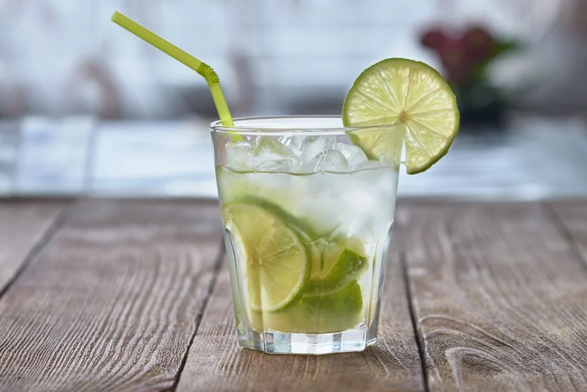

CAIPIRINHA

Veja como preparar o drinque nacional sem errar.
Seguindo essa receita, você não vai mais errar na caipirinha. Nada de amargor,
excesso de bagaço, açúcar sobrando no fundo. A boa caipirinha é equilibrada,
fácil de beber.
O segredinho que faz toda a diferença é cortar o limão em fatias finas e macerar
levemente com o açúcar. Esmagar demais ou bater na coqueteleira vai deixar o
drinque amargo.
INGREDIENTES
- 1 limão grande
- 2 colheres de açúcar
- gelo a gosto
- cachaça
MODO DE PREPARO
- Pegue o limão coloque-o na horizontal e retire as duas pontas,
vire-o na vertical e corte-o ao meio, retire os meio (parte branca) e,
depois, em fatias meia-lua finas.
- Macere (esmague) levemente as fatias de limão com o açúcar em um
copo baixo (macerar demais deixa o drinque amargo).
- Encha o copo com gelo e coloque a cachaça. Misture e finalize
com fatias de limão.